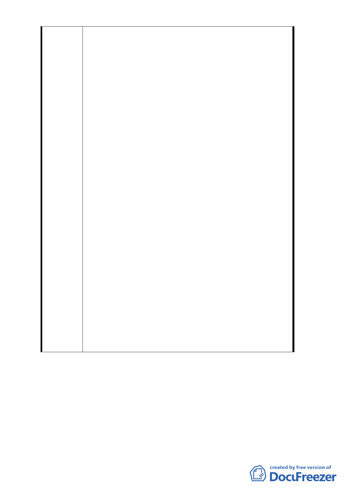

唐榮鐵工廠）土地使用計畫案』內，原都市計畫從 80
年變更核定公告起至今已逾廿年，由於計畫規定應由威
京開發投資公司以大街廓整體開發為原則。限縮本人所
有土地的開發權與財產處分權，造成本人土地無法單獨
申請建築亦無法與相鄰土地合併建築，加上土地使用性
質管制限制僅供公眾服務空間、國際購物中心、國際觀
光旅館、辦公大樓、文化休閒設施、停車場等六種使用
。均非陳情人所願與所能申請之項目，雖然解除整體開
發是協助解決私地主更新改建的需求與保障憲法對於
人民應有的財產處分權，但如果無法同時解除土地使用
的限制回歸第三種商業區管制，亦將造成更新改建後使
用之困難。
2. 陳情人於民國 98 年 9 月 30 日依台北市自治條例第 12
、15 條及「台北市未經劃定應實施更新之地區自行劃定
更新單元建築物及地區環境評估指標」等規定，向貴府
都市更新處（以下簡稱更新處）提出自行劃定更新單元
申請，並於 98 年 10 月 15 日經更新處北市都新字第
09831360800 號函通過指標審查。接續再依規定於 98 年
12 月 28 日檢送都市更新計畫至更新處，請提都市計畫
委員會審議。惟 99 年 4 月 22 日台北市都市計畫委員會
第 610 次會議決議：「本案依現行都市計畫書載名本區
應由威京公司整體開發，有關更新單元劃定暫予保留，
請市府釐清本計畫區整體開發權責單位，以及其開發意
願後再行討論。」雖經部份地主一再陳請市府釐清開發
主體威京公司解散清算已無開發能力之事實，然台北市
政府仍於 101 年 2 月 23 日依 101 年 1 月 4 日召開研商
會議決議，以都新字第 10003943400 號函表示：「…在
整體開發及主體規定解除前，暫緩受民間申請劃定更新
單元案，目前已申請劃定之案件請先敘明理由退還申請
人。」今即然細部計畫已配合解除整體開發是否應併案
同意原自行劃定都市更新地區之申請。
- 59 -